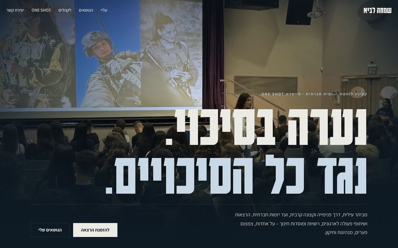
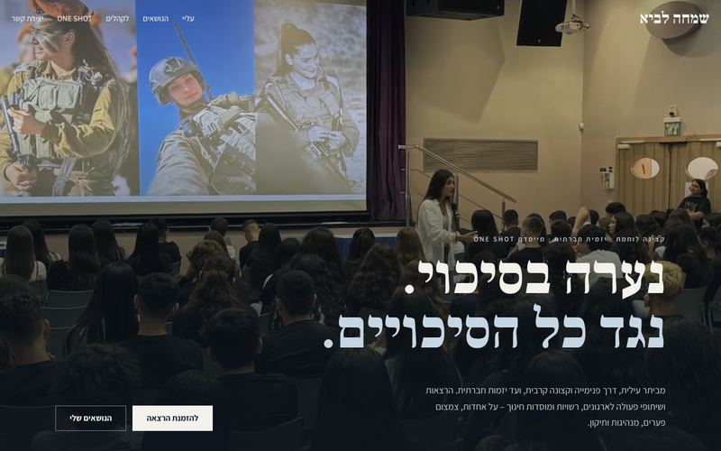
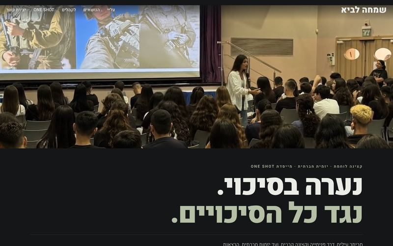

אותו מבנה ואותו תוכן בשלושתן – רק הצבעים, הגופנים והפתיחה משתנים. צבעים שקטים שמשדרים אמינות: כחול עמוק, לבן, גרפיט.

הכי קרוב לאפשרות 4 המקורית: כותרת צרה וענקית, רקע כחול-לילה, הדגשה בתכלת-אפור.

פתיחה קולנועית כהה, ושאר האתר בהיר ונקי. כותרות סריפיות – מכובד ורשמי, מתאים למשרדי ממשלה.

הסרטון במסגרת "קולנוע" רחבה והכותרת מתחתיו, כמו כתובית פתיחה של סרט. גרפיט עם ירוק-זית שקט.
המבנה בשלושתן: פתיחה עם סרטון → עליי בקצרה + 4 עובדות → 5 הנושאים המרכזיים → לכל קהל, אילו נושאים מודגשים → ONE SHOT → יצירת קשר. הטקסטים הם טיוטה – מחכים לדיוק שלכם.